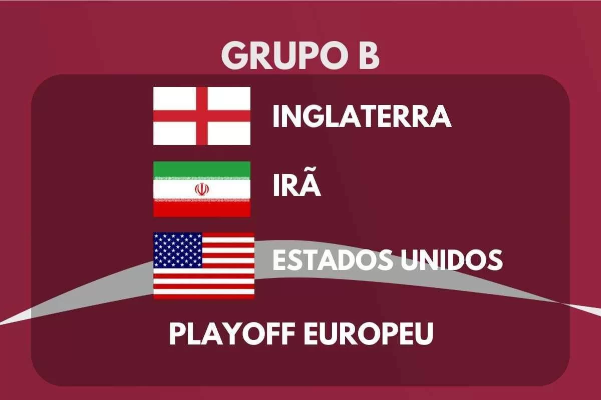

DESCRIÇÃO DO GRUPO
O Grupo B da Copa do Mundo FIFA 2022 trá sua primeira fase de jogos de 21 e 29 de novembro de 2022.
O grupo é formado por Inglaterra, Irã, Estados Unidos e os vencedores do Caminho A da UEFA.
As duas melhores equipes avançam para as oitavas de final.
|  |
Encontros anteriores em Copas do Mundo |
| Inglaterra x Irã |
Nenhum encontro |
| Estados Unidos x UEFA |
Adversário ainda não definido |
| Inglaterra x Estados Unidos |
1950, fase de grupos:
Estados Unidos 1-0 Inglaterra
2010, fase de grupos:
Inglaterra 1-1 Estados Unidos |
| UEFA x Irã |
Adversário ainda não definido |
| UEFA x Estados Unidos |
Adversário ainda não definido |
| Irã x Estados Unidos |
1998, fase de grupos:
Estados Unidos 1-2 Irã |
EQUIPES
| Equipe |
Inscrição |
Confederação |
Método de Qualificação |
Data de Qualificação |
Aparições em Copas do Mundo |
Última Participação |
Melhor Resultado |
Ranking FIFA (Março/2022) |
| Inglaterra |
B1
(Cabeça-de-chave) |
UEFA |
Vencedor do grupo I |
15 de novembro de 2021 |
15 |
2018 |
Campeão (1966) |
5º |
| Irã |
B2 |
AFC |
Vencedor do grupo A |
27 de janeiro de 2022 |
6 |
2018 |
Fase de grupos (1978, 1998, 2006, 2014, 2018) |
21º |
| Estados Unidos |
B3 |
CONCACAF |
3º colocado da terceira fase |
30 de março de 2022 |
11 |
2014 |
Terceiro lugar (1930) |
15º |
País de Gales,
Ucrânia ou Escócia |
B4 |
UEFA |
Vencedor da repescagem A |
Junho de 2022 |
- |
- |
- |
- |
PARTIDAS
Todas as partidas seguem o fuso horário UTC+3 (Horário de Moscow).
Inglaterra x Irã
| Data/Hora |
Local |
| 21 de Novembro às 16:00 |
Estádio Internacional Khalifa, Al Rayyan |
Estados Unidos x Vencedor Caminho A UEFA
| Data/Hora |
Local |
| 21 de Novembro às 22:00 |
Estádio Ahmed bin Ali, Al Rayyan |
Vencedor Caminho A UEFA x Irã
| Data/Hora |
Local |
| 25 de Novembro às 13:00 |
Estádio Ahmed bin Ali, Al Rayyan |
Inglaterra x Estados Unidos
| Data/Hora |
Local |
| 25 de Novembro às 22:00 |
Estádio Al Bayt, Al Khor |
Vencedor Caminho A UEFA x Inglaterra
| Data/Hora |
Local |
| 29 de Novembro às 22:00 |
Estádio Ahmed bin Ali, Al Rayyan |
Irã x Estados Unidos
| Data/Hora |
Local |
| 29 de Novembro às 22:00 |
Estádio Al Thumama, Doha |
CLASSIFICAÇÃO
| 1º Colocado |
2º Colocado |
| Enfrenta o 2º Colocado do Grupo A, nas Oitavas de Final |
Enfrenta o 1º Colocado do Grupo A, nas Oitavas de Final |